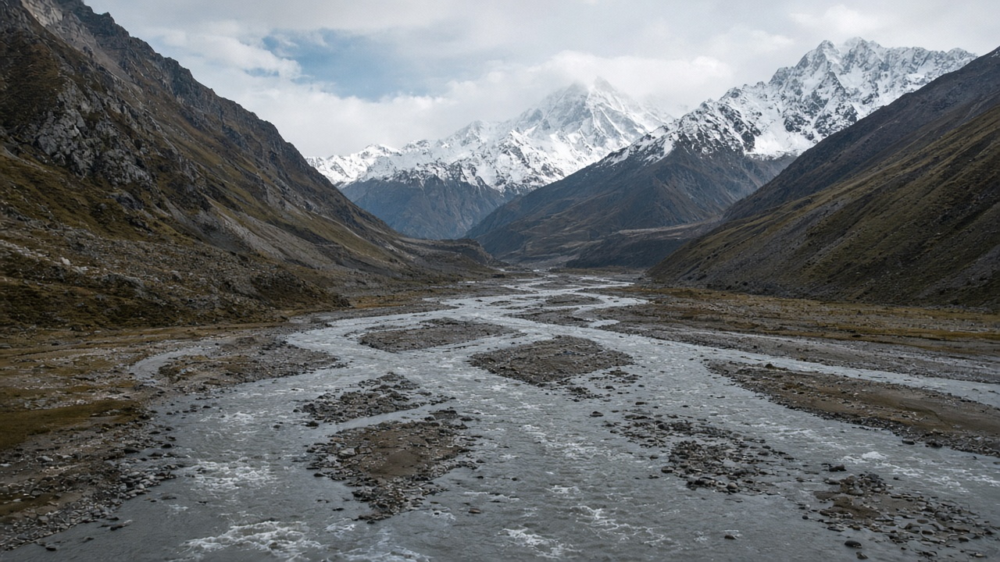
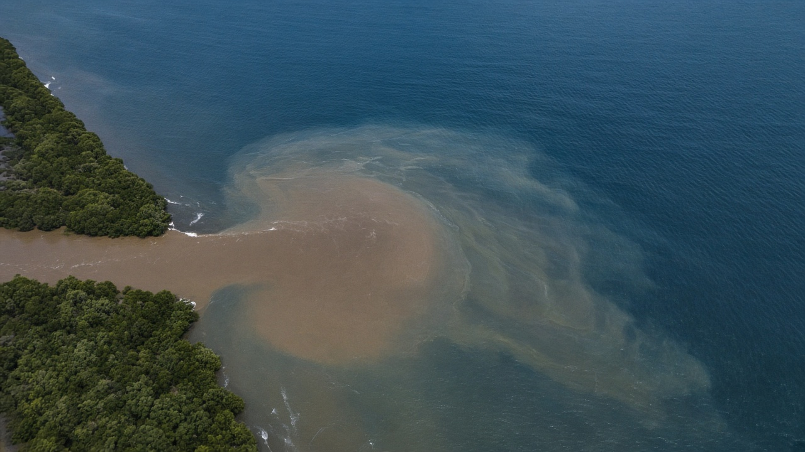
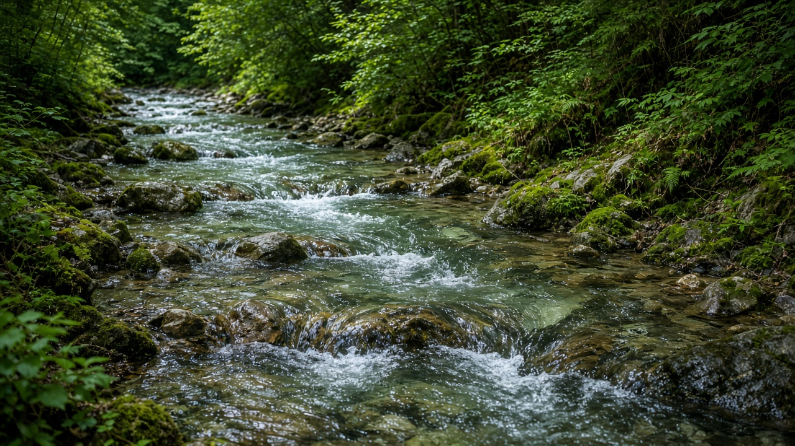

Himalayan Rivers and the Bay of Bengal
Published on August 20, 2026

Nepal is landlocked, yet its snow, glaciers, and monsoon rain still reach the sea. The Koshi, Gandaki, and Karnali systems drain south into the Ganga; together with the Brahmaputra and Meghna they form one of Earth’s largest river complexes, emptying into the Bay of Bengal. That freshwater plume lowers salinity, strengthens stratification, and delivers the sediment that built the world’s largest submarine fan and the Sundarbans delta. What happens on Himalayan slopes—erosion, dam trapping of silt, fertilizer runoff, untreated sewage, and plastic leak—therefore becomes part of the Bay’s chemistry, turbidity, and fisheries, even though no Nepali harbour faces open ocean.
Sediment is both gift and problem. Historic loads nourished mangroves, beaches, and offshore mudbanks that dampen cyclones and feed detrital food webs. Dams and embankments now intercept sand and silt, starving the delta while reservoirs fill; meanwhile extreme monsoon pulses still deliver pulses of mud, nutrients, and pollutants in a few violent weeks. Agricultural nitrogen and phosphorus, industrial metals, and microplastics ride the same highways. In the northern Bay, this cocktail interacts with a strong oxygen minimum zone and intense fishing, so upstream water quality is not a local river story only. Hilsa, shrimp, and artisanal catches along Bangladesh and eastern India depend on estuarine mixing that Himalayan rivers help set.
A landlocked country still has ocean duties and ocean interests. Basin cooperation on sediment, pollution, and flood warning is marine policy by another name. Students and planners who treat the Ganga–Brahmaputra–Meghna as a pipe to somewhere else miss that Nepal is an upstream steward of a large marine ecosystem. Measuring river plastics, restoring riparian buffers, and operating dams with downstream delta needs in mind are practical ways to protect Bay of Bengal nurseries from the mountains. The ocean begins at the first tributary: that is the geographic fact that links Himalayan hydrology to marine life without pretending Nepal has a coast.

नेपाल भूपरिवेष्टित छ, तर यसको हिउँ, हिमनदी र मनसुन वर्षा अझै समुद्र पुग्छन्। कोशी, गण्डकी र कर्णाली प्रणाली दक्षिण गंगामा बग्छन्; ब्रह्मपुत्र र मेघनासँग मिलेर पृथ्वीका सबैभन्दा ठूला नदी जटिलमध्ये एक बन्छन्, बंगालको खाडीमा खाली हुन्छन्। त्यो ताजा पानीको प्लुमले लवणता घटाउँछ, तहबद्धता बलियो पार्छ र संसारको सबैभन्दा ठूलो पनडुब्बी पंखा तथा सुन्दरबन डेल्टा बनाएको तलछट पुर्याउँछ। हिमालयी भिरमा हुने क्षरण, बाँधले लेदो थुन्ने, मल बहाव, नशोधिएको ढल र प्लास्टिक चुहावट त्यसैले नेपाली बन्दरगाह खुला महासागर नफर्के पनि खाडीको रसायन, धमिलोपन र मत्स्यका भाग बन्छन्।
तलछट उपहार र समस्या दुवै हो। ऐतिहासिक भारले म्यानग्रोभ, समुद्र तट र अपतटीय हिलो बैंक पोषण गरे जसले चक्रवात कमजोर पार्छन् र मलबा खाद्य जाल खुवाउँछन्। बाँध र तटबन्धले अब बालुवा र लेदो रोक्छन्, डेल्टा भोकमरी पार्छन् भने जलाशय भरिन्छन्; त्यसैबीच चरम मनसुन स्पन्दनले केही हिंसात्मक हप्तामा हिलो, पोषक र प्रदूषक अझै पठाउँछन्। कृषि नाइट्रोजन र फस्फोरस, औद्योगिक धातु र सूक्ष्मप्लास्टिक उही राजमार्ग चढ्छन्। उत्तरी खाडीमा यो मिश्रण बलियो न्यून-अक्सिजन क्षेत्र र तीव्र माछा मार्नेसँग मिल्छ, त्यसैले माथिल्लो पानी गुणस्तर स्थानीय नदी कथा मात्र होइन। बंगलादेश र पूर्वी भारतका हिल्सा, झिँगा र परम्परागत पकड मुहानी मिश्रणमा निर्भर छन् जुन हिमालयी नदीले सेट गर्न मद्दत गर्छन्।
भूपरिवेष्टित देशसँग पनि महासागर कर्तव्य र महासागर स्वार्थ हुन्छन्। तलछट, प्रदूषण र बाढी पूर्वसूचनामा बेसिन सहकार्य अर्को नामको समुद्री नीति हो। गंगा–ब्रह्मपुत्र–मेघनालाई कतैतिर जाने पाइप मान्ने विद्यार्थी र योजनाकारले नेपाल ठूलो समुद्री पारिस्थितिकीको माथिल्लो संरक्षक हो भन्ने छुटाउँछन्। नदी प्लास्टिक नाप्नु, किनारा मध्यवर्ती क्षेत्र पुनर्स्थापना गर्नु र तल्लो डेल्टा आवश्यकता ध्यानमा राखी बाँध चलाउनु पहाडबाट बंगालको खाडी नर्सरी जोगाउने व्यावहारिक तरिका हुन्। महासागर पहिलो सहायक नदीबाट सुरु हुन्छ: त्यो भौगोलिक तथ्य हो जसले नेपालसँग तट छ भनी नढाँटी हिमालयी जलविज्ञानलाई समुद्री जीवनसँग जोड्छ।

नेपाल स्थलरुद्ध है, पर इसकी बर्फ, हिमनद और मानसून वर्षा अभी समुद्र पहुँचती हैं। कोसी, गंडकी और कर्णाली तंत्र दक्षिण गंगा में गिरते हैं; ब्रह्मपुत्र और मेघना के साथ मिलकर पृथ्वी के सबसे बड़े नदी संकुलों में एक बनते हैं, बंगाल की खाड़ी में खाली होते हैं। वह मीठा जल प्लूम लवणता घटाता, स्तरण मज़बूत करता और विश्व का सबसे बड़ा पनडुब्बी पंखा तथा सुंदरबन डेल्टा बनाने वाली तलछट पहुँचाता है। हिमालयी ढलानों पर होने वाला क्षरण, बाँध द्वारा गाद रोकना, खाद अपवाह, अशोधित मलजल और प्लास्टिक रिसाव इसलिए नेपाली बंदरगाह खुले महासागर न देखने पर भी खाड़ी के रसायन, धुंधलापन और मत्स्य के भाग बनते हैं।
तलछट उपहार और समस्या दोनों है। ऐतिहासिक भार ने मैंग्रोव, समुद्र तट और अपतटीय कीचड़ बैंक पोषित किए जो चक्रवात कुंद करते और अपरद खाद्य जाल खिलाते हैं। बाँध और तटबंध अब बालू और गाद रोकते हैं, डेल्टा भूखा करते हैं जबकि जलाशय भरते हैं; इसी बीच चरम मानसून स्पंदन कुछ हिंसक हफ्तों में कीचड़, पोषक और प्रदूषक अभी भेजते हैं। कृषि नाइट्रोजन और फॉस्फोरस, औद्योगिक धातु और सूक्ष्मप्लास्टिक उन्हीं राजमार्गों पर चढ़ते हैं। उत्तरी खाड़ी में यह मिश्रण मज़बूत न्यून-ऑक्सीजन क्षेत्र और तीव्र मछली पकड़ने से मिलता है, इसलिए ऊपरी जल गुणवत्ता केवल स्थानीय नदी कथा नहीं। बांग्लादेश और पूर्वी भारत के हिलसा, झींगा और पारंपरिक पकड़ मुहानी मिश्रण पर निर्भर हैं जिसे हिमालयी नदियाँ सेट करने में मदद करती हैं।
स्थलरुद्ध देश के भी महासागर कर्तव्य और महासागर स्वार्थ होते हैं। तलछट, प्रदूषण और बाढ़ पूर्वचेतावनी पर बेसिन सहयोग दूसरे नाम की समुद्री नीति है। गंगा–ब्रह्मपुत्र–मेघना को कहीं और जाने वाला पाइप मानने वाले छात्र और योजनाकार चूकते हैं कि नेपाल एक बड़े समुद्री पारिस्थितिक तंत्र का ऊपरी संरक्षक है। नदी प्लास्टिक नापना, किनारा मध्यवर्ती क्षेत्र पुनर्स्थापित करना और निचले डेल्टा ज़रूरतों को ध्यान में रख बाँध चलाना पहाड़ों से बंगाल की खाड़ी नर्सरी बचाने के व्यावहारिक तरीके हैं। महासागर पहली सहायक नदी से शुरू होता है: वह भौगोलिक तथ्य है जो नेपाल के पास तट है यह दिखावे बिना हिमालयी जलविज्ञान को समुद्री जीवन से जोड़ता है।